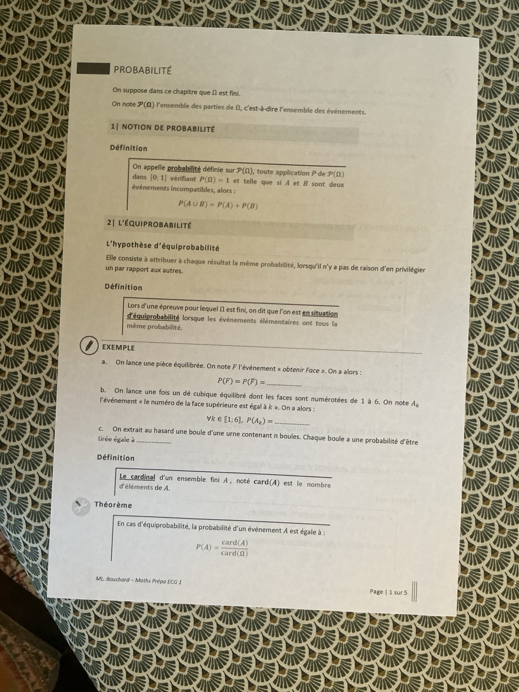
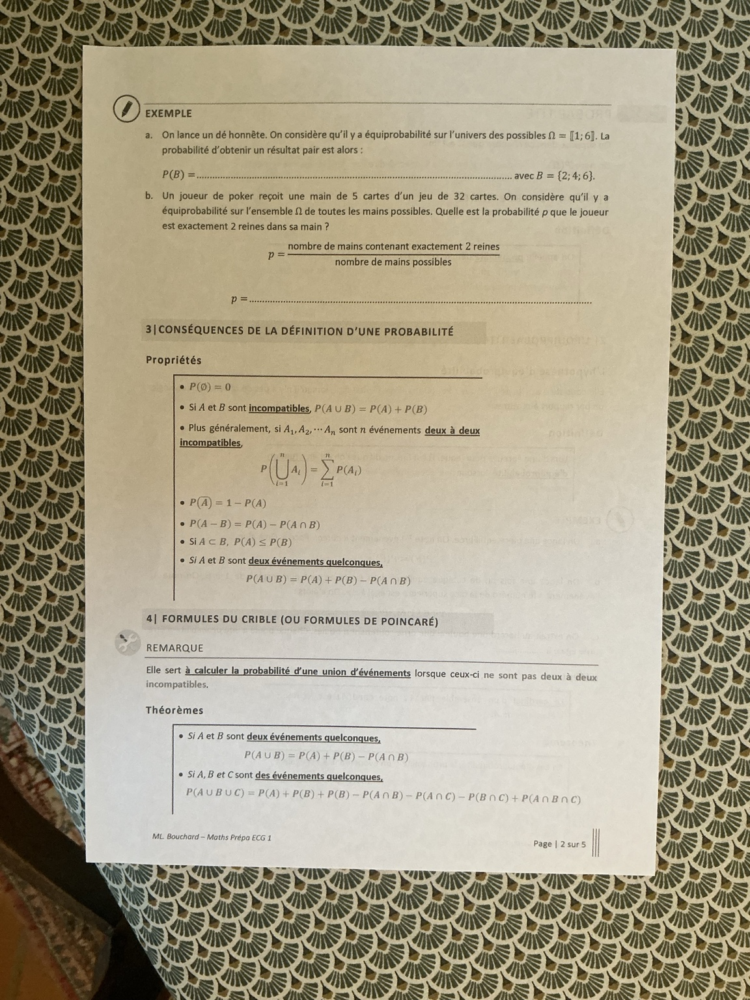
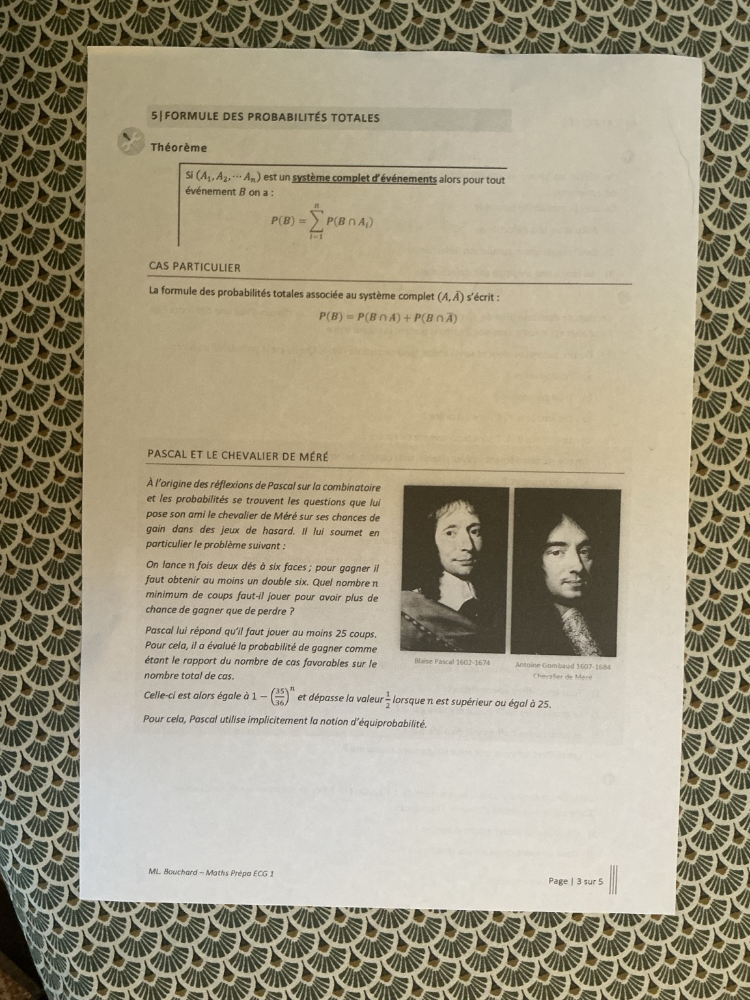
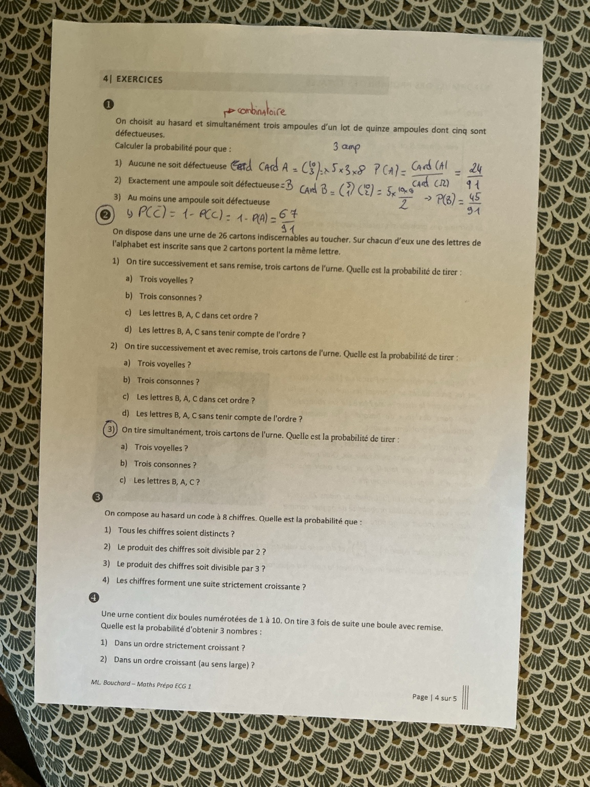
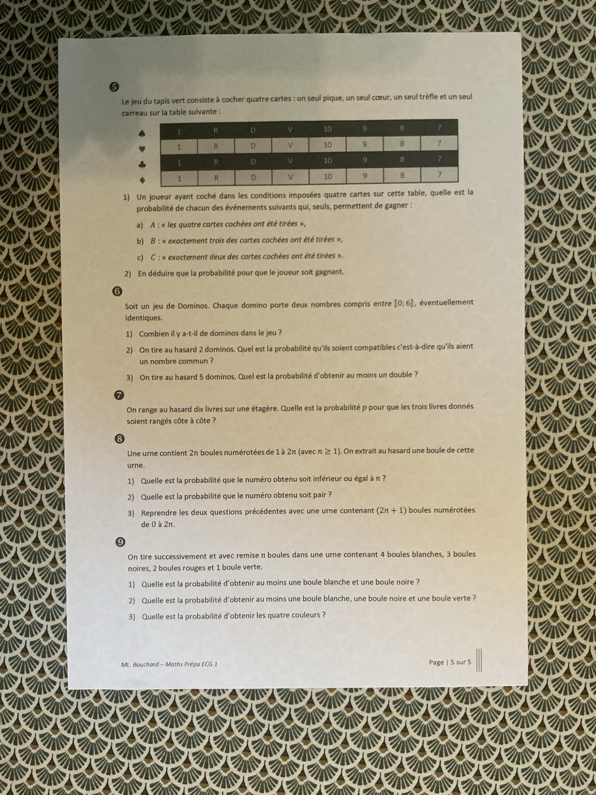

Probabilité sur un univers fini
Équiprobabilité, dénombrement, formules du crible et probabilités totales. Les cinq pages de classe, tous les exemples et les neuf exercices corrigés en valeurs exactes.
1. Notion de probabilité
Dans tout ce cours, \(\Omega\) est fini. On note \(\mathcal P(\Omega)\) l’ensemble des parties de \(\Omega\), c’est-à-dire l’ensemble des événements.
Une probabilité est une application \(P:\mathcal P(\Omega)\to[0,1]\) telle que :
- \(P(\Omega)=1\) ;
- si \(A\) et \(B\) sont incompatibles, alors \(P(A\cup B)=P(A)+P(B)\).
Une probabilité est un nombre entre 0 et 1. On additionne directement les probabilités d’événements incompatibles ; si leur intersection n’est pas vide, on doit en tenir compte.
2. Équiprobabilité et dénombrement
L’hypothèse d’équiprobabilité consiste à attribuer la même probabilité à chaque résultat, lorsque le modèle ne privilégie aucun résultat. Sur un univers fini, il y a équiprobabilité si tous les événements élémentaires ont la même probabilité.
Exemples complétés — pièce, dé et urne
- Pièce équilibrée : si \(F\) est « obtenir Face », alors \(P(F)=P(\overline F)=\boxed{1/2}\).
- Dé équilibré : pour tout \(k\in\llbracket1,6\rrbracket\), \(A_k=\{k\}\) et \(P(A_k)=\boxed{1/6}\).
- Urne de \(n\ge1\) boules tirées uniformément : chaque boule a la probabilité \(\boxed{1/n}\) d’être choisie.
Dans chaque cas, la somme des probabilités des issues vaut 1 : deux fois \(1/2\), six fois \(1/6\), ou \(n\) fois \(1/n\). Des couleurs ou des numéros portés par plusieurs boules ne sont pas nécessairement équiprobables.
Le cardinal d’un ensemble fini \(A\), noté \(\operatorname{card}(A)\) ou \(|A|\), est son nombre d’éléments. En cas d’équiprobabilité :
Justification : si \(|\Omega|=N\), chaque singleton vaut \(1/N\). L’événement \(A\) est la réunion disjointe de \(|A|\) singletons.
Exemple a — obtenir un numéro pair au dé
\(B=\{2,4,6\}\), donc \(|B|=3\). Les six faces sont équiprobables :
Exemple b — Exactement deux reines dans cinq cartes
Un joueur reçoit une main de cinq cartes d’un jeu de 32 cartes. Toutes les mains sont équiprobables. Quelle est la probabilité d’avoir exactement deux reines ?
Correction détaillée — choisir deux reines et trois autres cartes
Une main est un ensemble de cinq cartes : l’ordre ne compte pas. Il y a \(\binom{32}{5}\) mains possibles.
Le jeu contient quatre reines et 28 cartes qui ne sont pas des reines. Pour avoir exactement deux reines, on choisit deux cartes parmi les quatre reines, puis trois parmi les 28 autres :
La forme avec coefficients binomiaux est déjà exacte. Pour simplifier sans calculatrice :
Piège : choisir les trois autres cartes parmi les 30 restantes autoriserait une troisième ou une quatrième reine. Il faut les choisir parmi les 28 non-reines.
| Situation | Nombre d’issues |
|---|---|
| \(p\) tirages successifs avec remise parmi \(N\) objets | \(N^p\) |
| \(p\) tirages successifs sans remise parmi \(N\) objets | \(N(N-1)\cdots(N-p+1)\) |
| \(p\) objets simultanément, sans ordre, parmi \(N\) | \(\binom Np=\dfrac{N!}{p!(N-p)!}\) |
3. Conséquences de la définition
| Propriété | Formule | Condition |
|---|---|---|
| Impossible | \(P(\varnothing)=0\) | Toujours |
| Réunion de deux incompatibles | \(P(A\cup B)=P(A)+P(B)\) | \(A\cap B=\varnothing\) |
| Réunion disjointe finie | \(P(\bigcup_{i=1}^n A_i)=\sum_{i=1}^nP(A_i)\) | Les \(A_i\) sont deux à deux incompatibles. |
| Contraire | \(P(\overline A)=1-P(A)\) | Toujours |
| Différence | \(P(A-B)=P(A)-P(A\cap B)\) | \(A-B=A\cap\overline B\) |
| Croissance | \(P(A)\le P(B)\) | \(A\subseteq B\) |
| Réunion quelconque | \(P(A\cup B)=P(A)+P(B)-P(A\cap B)\) | Aucune hypothèse d’incompatibilité |
Explications ajoutées — pourquoi ces formules ?
\(\Omega\) et \(\varnothing\) sont incompatibles et leur réunion est \(\Omega\), donc \(1=1+P(\varnothing)\), d’où \(P(\varnothing)=0\).
\(A\) et \(\overline A\) sont incompatibles et couvrent \(\Omega\), donc \(P(A)+P(\overline A)=1\).
On découpe \(A\) en \(A-B\) et \(A\cap B\), deux parties incompatibles : \(P(A)=P(A-B)+P(A\cap B)\). On isole alors \(P(A-B)\).
Si \(A\subseteq B\), \(B=A\cup(B-A)\), réunion disjointe. Ainsi \(P(B)=P(A)+P(B-A)\ge P(A)\).
Enfin, \(A\cup B=A\cup(B-A)\), réunion disjointe : \(P(A\cup B)=P(A)+P(B)-P(A\cap B)\).
4. Formules du crible ou de Poincaré
Ces formules calculent la probabilité d’une réunion lorsque les événements ne sont pas nécessairement deux à deux incompatibles.
Le polycopié imprime deux fois \(P(B)\) dans la première ligne de la formule à trois événements. Le troisième terme est bien \(P(C)\). La photo originale reste consultable en bas de cette fiche.
Une issue appartenant aux trois événements est comptée trois fois par les termes simples, retirée trois fois par les intersections doubles, puis ajoutée une fois par l’intersection triple : au final, elle est comptée une seule fois.
Complément utile pour l’exercice 9 : pour quatre événements, on additionne les probabilités simples, on soustrait les six intersections doubles, on ajoute les quatre intersections triples, puis on soustrait l’intersection des quatre.
5. Formule des probabilités totales
Si \((A_1,\ldots,A_n)\) est un système complet d’événements, alors, pour tout événement \(B\) :
Les événements \(B\cap A_i\) sont deux à deux incompatibles et leur réunion est \(B\) : ils découpent \(B\) selon tous les cas possibles.
On distingue « \(B\) avec \(A\) » et « \(B\) sans \(A\) ».
6. Pascal et le chevalier de Méré
La feuille présente les questions de jeux de hasard posées à Blaise Pascal (1602–1662) par le chevalier de Méré, Antoine Gombaud (1607–1684). Le problème proposé est le suivant : on lance \(n\) fois deux dés à six faces et on gagne si l’on obtient au moins un double six. Quel est le nombre minimal de coups pour avoir plus de chances de gagner que de perdre ?
Le résultat donné est \(1-(35/36)^n\), supérieur à \(1/2\) à partir de 25 coups.
Explication ajoutée — passer par « aucun double six »
On suppose les dés équilibrés et les coups indépendants. À chaque coup, il y a 36 couples de faces équiprobables, dont un seul double six. Il reste 35 couples sans double six.
En \(n\) coups, il y a \(36^n\) suites de couples possibles et \(35^n\) suites sans aucun double six. Par équiprobabilité puis passage au contraire :
Cette probabilité croît avec \(n\). Avoir plus de chances de gagner que de perdre signifie qu’elle est strictement supérieure à \(1/2\).
Pour aller plus loin — prouver le seuil de 25 sans calculatrice ni logarithme
Posons \(r=36/35=1+1/35\). On cherche le premier entier \(n\) tel que \(r^n>2\). Comme \(r>1\), il suffit de montrer \(r^{24}<2<r^{25}\).
À 25 coups : minorer avec les quatre premiers termes du binôme
Tous les termes du développement sont positifs :
À 24 coups : majorer la fin du développement
Notons \(t_k=\binom{24}k/35^k\). Pour \(2\le k\le23\),
La somme des termes à partir de \(t_2\) est donc majorée par une somme géométrique. Sa somme finie est strictement inférieure à \(t_2/(1-22/105)\) :
Les deux comparaisons exactes donnent le seuil \(n=25\). Cette démonstration supplémentaire utilise le binôme et les sommes géométriques ; elle n’est pas nécessaire pour établir la formule de probabilité.
Exercice 1 — Trois ampoules parmi quinze
On choisit au hasard et simultanément trois ampoules parmi quinze, dont cinq sont défectueuses. Calculer la probabilité que : 1. aucune ne soit défectueuse ; 2. exactement une le soit ; 3. au moins une le soit.
Correction détaillée — combinaisons et événement contraire
Il y a dix ampoules en bon état et cinq défectueuses. Le tirage est simultané : l’ordre ne compte pas. Les \(\binom{15}3\) lots de trois sont équiprobables.
1. Aucune défectueuse
On choisit les trois ampoules parmi les dix bonnes :
2. Exactement une défectueuse
On choisit une défectueuse parmi cinq et deux bonnes parmi dix :
3. Au moins une défectueuse
Le contraire est « aucune défectueuse » :
« Au moins une » autorise une, deux ou trois défectueuses. Ce n’est pas « exactement une ».
Exercice 2 — Les lettres de l’alphabet
Une urne contient 26 cartons indiscernables au toucher, portant chacun une lettre différente de l’alphabet. On tire trois cartons.
- Successivement, sans remise : probabilité de tirer a. trois voyelles ; b. trois consonnes ; c. B, A, C dans cet ordre ; d. B, A, C sans tenir compte de l’ordre.
- Successivement, avec remise : les quatre mêmes questions.
- Simultanément : probabilité de tirer a. trois voyelles ; b. trois consonnes ; c. les lettres B, A, C.
On compte les six voyelles A, E, I, O, U, Y, donc 20 consonnes. Le polycopié ne précise pas cette convention. Si Y est classé comme consonne en classe, remplacer 6 et 20 par 5 et 21 dans les formules.
1. Sans remise — les quatre réponses expliquées
Une issue est un triplet ordonné de lettres différentes. Les \(26\times25\times24=15600\) triplets sont équiprobables.
a. Trois voyelles
Six choix pour la première, puis cinq et quatre :
b. Trois consonnes
On simplifie \(20/25=4/5\), \(18/24=3/4\), puis \(3\times19/(5\times26)=57/130\).
c. B, A, C dans cet ordre
Un seul triplet convient :
d. B, A, C dans un ordre quelconque
Les trois lettres distinctes donnent \(3!=6\) ordres : BAC, BCA, ABC, ACB, CBA, CAB.
2. Avec remise — les quatre réponses expliquées
Après chaque tirage, les 26 lettres sont à nouveau disponibles. Les \(26^3\) triplets sont équiprobables ; les répétitions sont autorisées.
| Question | Comptage | Probabilité exacte |
|---|---|---|
| a. Trois voyelles | \(6^3\) triplets favorables | \((6/26)^3=\boxed{27/2197}\) |
| b. Trois consonnes | \(20^3\) triplets favorables | \((20/26)^3=\boxed{1000/2197}\) |
| c. BAC dans cet ordre | Un seul triplet | \(\boxed{1/26^3}=1/17576\) |
| d. Les trois lettres B, A, C | \(3!=6\) triplets | \(6/26^3=\boxed{3/8788}\) |
Pour la question d, les lettres demandées sont distinctes, même si l’expérience autorise les répétitions. AAA ou BBA ne sont pas des issues favorables.
3. Tirage simultané — les trois réponses expliquées
Une issue est maintenant un ensemble de trois lettres, sans ordre : \(|\Omega|=\binom{26}3=2600\).
On retrouve les probabilités de la partie 1 pour les événements qui ne dépendent pas de l’ordre : chaque ensemble de trois lettres correspond à exactement six triplets ordonnés.
Exercice 3 — Un code à huit chiffres
On compose au hasard un code à huit chiffres. Quelle est la probabilité que : 1. tous les chiffres soient distincts ; 2. leur produit soit divisible par 2 ; 3. leur produit soit divisible par 3 ; 4. ils forment une suite strictement croissante ?
Correction détaillée — dix chiffres possibles à chaque position
On modélise un code, et non un entier à huit chiffres : il peut commencer par 0. Chaque position prend uniformément une valeur dans \(\{0,\ldots,9\}\), indépendamment des autres. Donc \(|\Omega|=10^8\).
1. Tous les chiffres distincts
On a dix choix au début, puis neuf, huit… jusqu’à trois choix à la huitième position :
On peut conserver le produit exact. Pour le simplifier : le numérateur vaut \(2^7\times3^4\times5^2\times7\) et le dénominateur \(2^8\times5^8\), d’où \(3^4\times7/(2\times5^6)=567/31250\).
2. Produit divisible par 2
Un produit est impair si et seulement si tous ses facteurs sont impairs. Les cinq chiffres impairs sont 1, 3, 5, 7, 9 :
3. Produit divisible par 3
Comme 3 est premier, un produit est divisible par 3 si et seulement si au moins un facteur l’est. Les chiffres concernés sont 0, 3, 6, 9. Les six autres sont 1, 2, 4, 5, 7, 8 :
Zéro compte : si un chiffre est 0, le produit est 0, divisible par 2 et par 3. On ne doit pas l’exclure.
4. Suite strictement croissante
Les huit chiffres doivent être distincts. Chaque choix de huit chiffres parmi dix admet un seul ordre strictement croissant. Il y a donc \(\binom{10}8=\binom{10}2=45\) codes favorables :
Il ne faut pas multiplier par \(8!\) : cela compterait tous les ordres, alors qu’un seul est croissant.
Exercice 4 — Trois nombres dans l’ordre
Une urne contient dix boules numérotées de 1 à 10. On effectue trois tirages avec remise. Quelle est la probabilité d’obtenir trois nombres : 1. dans un ordre strictement croissant ; 2. dans un ordre croissant au sens large ?
Correction détaillée — distinguer x < y < z et x ≤ y ≤ z
Les \(10^3=1000\) triplets \((x,y,z)\) sont équiprobables.
1. Ordre strictement croissant
On choisit trois nombres distincts parmi dix. Pour chaque choix, il existe un seul ordre \(x<y<z\). D’où :
2. Ordre croissant au sens large
On distingue trois cas incompatibles :
- Trois valeurs distinctes : \(\binom{10}3=120\) triplets croissants.
- Exactement deux valeurs distinctes : on choisit \(a<b\) de \(\binom{10}2=45\) façons. Les triplets possibles sont \((a,a,b)\) et \((a,b,b)\), soit \(2\times45=90\) triplets.
- Une seule valeur : les dix triplets \((a,a,a)\).
Cette décomposition évite d’introduire une nouvelle formule. Elle donne le même nombre que \(\binom{12}3=220\), celui des choix de trois éléments avec répétition parmi dix.
Exercice 5 — Le tapis vert
Un joueur coche quatre cartes : un pique, un cœur, un trèfle et un carreau. Pour chaque couleur, les huit choix sont ceux de la table ci-dessous.
| Couleur | As (1) | Roi | Dame | Valet | 10 | 9 | 8 | 7 |
|---|---|---|---|---|---|---|---|---|
| Pique ♠ | 1 | R | D | V | 10 | 9 | 8 | 7 |
| Cœur ♥ | 1 | R | D | V | 10 | 9 | 8 | 7 |
| Trèfle ♣ | 1 | R | D | V | 10 | 9 | 8 | 7 |
| Carreau ♦ | 1 | R | D | V | 10 | 9 | 8 | 7 |
- Calculer les probabilités de \(A\) « les quatre cartes cochées sont tirées », \(B\) « exactement trois le sont », \(C\) « exactement deux le sont ».
- En déduire la probabilité de gagner, sachant que seuls ces trois événements permettent de gagner.
La feuille décrit la grille, mais ne précise pas comment sont tirées les cartes. La correction principale suppose une carte tirée uniformément parmi les huit de chaque couleur, indépendamment des autres couleurs. Les résultats ci-dessous dépendent de cette règle.
Correction détaillée — un tirage par couleur
Il y a \(8^4=4096\) résultats équiprobables. Dans chaque couleur, une carte correspond au choix du joueur et sept n’y correspondent pas.
1(a). Quatre bonnes cartes
Une seule combinaison réalise les quatre choix :
1(b). Exactement trois bonnes cartes
On choisit la couleur manquée de quatre façons ; elle offre sept mauvaises cartes. Dans les autres couleurs, le résultat est imposé :
1(c). Exactement deux bonnes cartes
On choisit les deux bonnes couleurs de \(\binom42=6\) façons. Chacune des deux autres a sept résultats défavorables :
2. Être gagnant
Les événements « exactement 4 », « exactement 3 » et « exactement 2 » réussites sont deux à deux incompatibles. On additionne :
Si la règle était « quatre cartes parmi les 32 »
Un tirage uniforme de quatre cartes parmi 32, sans imposer une carte par couleur, serait une autre expérience. Il y aurait alors \(\binom{32}4=35960\) mains possibles. Pour exactement \(k\) cartes cochées :
On obtiendrait \(P(A)=1/35960\), \(P(B)=112/35960\), \(P(C)=2268/35960\), et \(P(\text{gain})=2381/35960\). Il faut donc connaître la règle de tirage pour choisir la bonne correction.
Exercice 6 — Un jeu de dominos
Chaque domino porte deux nombres compris entre 0 et 6, éventuellement identiques.
- Combien de dominos contient le jeu ?
- On tire au hasard deux dominos. Quelle est la probabilité qu’ils soient compatibles, c’est-à-dire qu’ils aient un nombre commun ?
- On tire au hasard cinq dominos. Quelle est la probabilité d’obtenir au moins un double ?
Correction détaillée — l’ordre des deux moitiés ne compte pas
On considère le jeu usuel : un seul domino pour chaque paire non ordonnée de nombres. Les tirages portent sur des dominos distincts, sans remise.
1. Nombre de dominos
Il y a sept doubles, de \((0,0)\) à \((6,6)\). Pour les dominos non doubles, on choisit deux nombres distincts parmi sept :
Les écritures \((2,5)\) et \((5,2)\) désignent le même domino.
2. Deux dominos compatibles
Il y a \(\binom{28}2=28\times27/2=378\) paires équiprobables.
Fixons un nombre \(k\in\{0,\ldots,6\}\). Il figure sur sept dominos : le double \((k,k)\) et les six dominos \((k,j)\) avec \(j\ne k\). On peut donc choisir deux dominos portant \(k\) de \(\binom72=21\) façons.
Deux dominos distincts ne peuvent pas avoir deux nombres distincts communs : ils seraient alors le même domino. Chaque paire compatible est donc comptée une seule fois en choisissant son nombre commun.
3. Au moins un double parmi cinq
Le contraire est « les cinq dominos sont non doubles ». Il y a 21 non-doubles parmi 28 dominos :
La fraction du contraire se simplifie sans développer de factorielles :
Exercice 7 — Trois livres côte à côte
On range au hasard dix livres sur une étagère. Quelle est la probabilité que trois livres donnés soient rangés côte à côte ?
Correction détaillée — la méthode du bloc
On suppose les dix livres distincts et les \(10!\) rangements équiprobables. « Côte à côte » signifie que les trois livres donnés occupent trois places consécutives, dans n’importe quel ordre.
- On regroupe les trois livres en un seul bloc.
- On range les sept autres livres et ce bloc : il reste huit objets, soit \(8!\) possibilités.
- À l’intérieur du bloc, les trois livres peuvent être ordonnés de \(3!=6\) façons.
On simplifie les factorielles avant de calculer. Oublier \(3!\) imposerait un ordre particulier aux trois livres, ce que l’énoncé ne demande pas.
Exercice 8 — Bornes et parité dans une urne
Une urne contient \(2n\) boules numérotées de 1 à \(2n\), avec \(n\ge1\). On tire une boule au hasard.
- Probabilité que le numéro soit inférieur ou égal à \(n\) ?
- Probabilité qu’il soit pair ?
- Reprendre ces deux questions avec \(2n+1\) boules numérotées de 0 à \(2n\).
Correction détaillée — compter les extrémités et le zéro
1. Numéro inférieur ou égal à n, parmi 1 à 2n
Les numéros favorables sont \(1,2,\ldots,n\), soit \(n\) numéros :
2. Numéro pair, parmi 1 à 2n
Les numéros pairs sont \(2,4,\ldots,2n\), soit \(n\) numéros :
3(a). Numéro inférieur ou égal à n, parmi 0 à 2n
On compte maintenant \(0,1,\ldots,n\), soit \(n+1\) valeurs. L’univers contient \(2n+1\) boules :
3(b). Numéro pair, parmi 0 à 2n
Zéro est pair. Les numéros \(0,2,4,\ldots,2n\) sont au nombre de \(n+1\) :
Ces deux probabilités sont égales, mais les deux événements ne sont généralement pas les mêmes.
Exercice 9 — Obtenir plusieurs couleurs
On tire successivement et avec remise \(n\) boules dans une urne contenant quatre boules blanches, trois noires, deux rouges et une verte.
- Probabilité d’obtenir au moins une blanche et au moins une noire ?
- Probabilité d’obtenir au moins une blanche, une noire et une verte ?
- Probabilité d’obtenir les quatre couleurs ?
On travaille pour un entier \(n\ge1\), avec des tirages uniformes et indépendants, comme dans le modèle usuel de tirages avec remise. Les dix boules sont équiprobables ; les quatre couleurs ne le sont pas.
Notons \(M_B,M_N,M_R,M_V\) les événements « aucune boule blanche, noire, rouge, verte respectivement ». On calcule la probabilité de manquer au moins une couleur demandée, puis on passe au contraire.
S’il reste \(r\) boules autorisées sur dix à chaque tirage, il y a \(r^n\) suites de boules favorables parmi \(10^n\), donc la probabilité de n’utiliser que ces boules est \((r/10)^n\).
1. Au moins une blanche et une noire — crible à deux événements
Le contraire est \(M_B\cup M_N\). Sans blanche, il reste six boules ; sans noire, sept ; sans blanche ni noire, trois (deux rouges et une verte).
Le crible retire le double comptage des suites sans blanche ni noire :
Pour \(n=1\), le résultat vaut 0 : une seule boule ne peut pas avoir deux couleurs. Pour \(n=2\), les ordres blanc-noir et noir-blanc donnent \(2\times4\times3/10^2=6/25\).
2. Blanche, noire et verte — crible à trois événements
Le contraire est \(M_B\cup M_N\cup M_V\). On compte les boules qui restent lorsque certaines couleurs sont interdites :
| Couleurs absentes | Boules restantes | Probabilité |
|---|---|---|
| Blanche | 6 | \((6/10)^n\) |
| Noire | 7 | \((7/10)^n\) |
| Verte | 9 | \((9/10)^n\) |
| Blanche et noire | 3 | \((3/10)^n\) |
| Blanche et verte | 5 | \((5/10)^n\) |
| Noire et verte | 6 | \((6/10)^n\) |
| Blanche, noire et verte | 2 (les rouges) | \((2/10)^n\) |
Les termes en \((6/10)^n\) s’annulent :
Pour \(n=1\) ou \(n=2\), la probabilité est nulle. À \(n=3\), elle vaut \(3!\times4\times3\times1/10^3=9/125\) : chaque couleur demandée doit apparaître exactement une fois.
3. Les quatre couleurs — les signes du crible expliqués
Le contraire est \(M_B\cup M_N\cup M_R\cup M_V\). Pour la probabilité de présence des quatre couleurs, les signes deviennent : 1 − absences simples + absences doubles − absences triples + absence des quatre.
| Couleurs absentes | Nombre de boules restantes |
|---|---|
| B ; N ; R ; V | 6 ; 7 ; 8 ; 9 |
| BN ; BR ; BV ; NR ; NV ; RV | 3 ; 4 ; 5 ; 5 ; 6 ; 7 |
| BNR ; BNV ; BRV ; NRV | 1 ; 2 ; 3 ; 4 |
| BNRV | 0 : impossible si \(n\ge1\) |
Après simplification des termes opposés :
Contrôles exacts : le résultat est nul pour \(n=1,2,3\). À \(n=4\), chacune des quatre couleurs doit apparaître une fois :
Piège : multiplier les probabilités « au moins une blanche », « au moins une noire », etc. serait incorrect : ces événements portant sur toute la série de tirages ne sont pas indépendants.
Fiche express — Les bons réflexes
- Définir les issues : objets distincts, ordre, remise, répétitions et éventuel zéro initial.
- Justifier l’équiprobabilité avant d’utiliser le rapport de cardinaux.
- Exactement : choisir les réussites et imposer les échecs ailleurs.
- Au moins un : calculer souvent \(1-P(\text{aucun})\).
- Plusieurs couleurs présentes : travailler avec les couleurs absentes et le crible.
- Deux à deux incompatibles : leurs probabilités s’additionnent directement.
- Sans calculatrice : simplifier les produits et les factorielles ; conserver une puissance ou un coefficient binomial exact si le développement n’apporte rien.
Revoir le langage des événements · Revoir les coefficients binomiaux · Chapitre 10
Les 5 photographies originales
Les pages sont présentées dans l’ordre du polycopié. Les fichiers téléchargés sont les photographies reçues, inchangées ; l’affichage des pages prises de côté est remis à l’endroit.
Document original — page 1/5 · IMG_1226.jpeg

Document original — page 2/5 · IMG_1227.jpeg

Document original — page 3/5 · IMG_1228.jpeg

Document original — page 4/5 · IMG_1229.jpeg

Document original — page 5/5 · IMG_1230.jpeg
